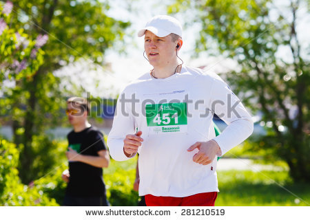

Spring Has Sprung Run

Montana's Best Footrace
The results are in…
257 runners braved the 85° weather on April 19 and ran, in one fashion or another, the 5-kilometer course through downtown Butte. About half the runners sported costumes rather than serious running gear, and many runners posted good times (costumed or not). For many, this was the season’s first run (not race – run), a motivational warm up for the fun and work that lies ahead.
Awards were given for best time in four age categories for both sexes.
- Girls 14-19
- Jamie Harrington 19:33 · Sorcia Besay 20:06 · Rachel Stores 25:44
- Boys 14-19
- Bruce Bevin 18:55 · Endre Witthoeft 19:46 · Joe Wesevich 21:19
- Women 20-39
- Marie Sillers 17:45 · Denise Wortenhau 18:33 · Lorel Dwiers 18:56
- Women 39-49
- Jannie Gilbert 17:48 · Mia Saphi 19:23 · Dawn Severson 21:31
- Women 50+
- Julia Gent 21:09 · Mandy Reming 34:24 · Sung Bon 41:02
- Men 20-39
- Gary Cruz 17:11 · Lanny Sorla 18:40 · Kip Oestin 18:55
- Men 40-49
- Steve Jackson 18:50 · Jim Kostenberger 24:33 · Lee Whisten 27:18
- Men 50+
- Billy Tisa 18:22 · Alois Anderson 28:48 · Lyle Tolbor 35:46
-
Email Us!
email link